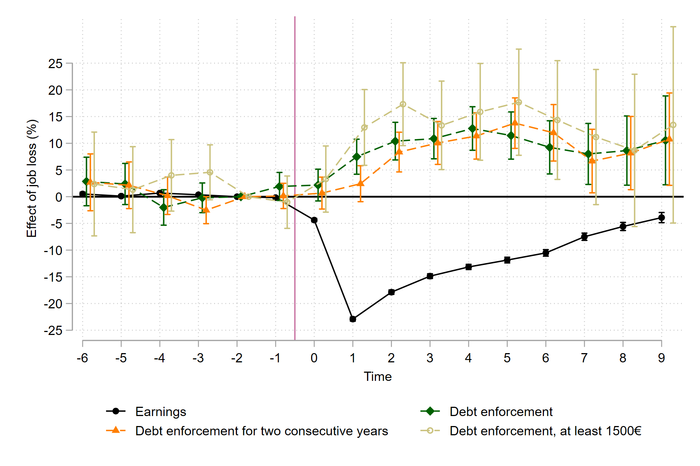
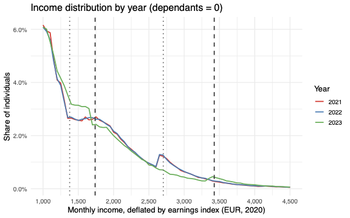

I am a PhD candidate at the University of Helsinki. In my research, I explore the interplay between health, social insurance and labor market to understand the causes of adverse outcomes like financial distress and crime.
I will be on the academic job market in 2026!
Research interests: Health Economics, Labor Economics, Economics of Crime
Outside of work, I am an avid birdwatcher and (mostly road) cyclist.
Research
Job Market Paper
Supporting adolescents with mental health problems is a central policy challenge for modern welfare states. This paper studies the long-term effects of the Youth Rehabilitation Allowance (YRA), a conditional cash transfer program in Finland that provides income support to young individuals with health problems while requiring participation in education. Using an instrumental variable strategy based on random assignment of examiners to benefit applications, I estimate the causal effects of benefit receipt on educational attainment, labor market outcomes , and healthcare use. I find little evidence of improvements in long-term labor market or health outcomes. Instead, benefit receipt causes lower employment, higher reliance on other government programs, and an increased likelihood of being out of education or the labor force. These results highlight how the long-term effects of cash transfers depend critically on program design and target population.
Publications
This article employs a couple-level framework to examine how a child's severe illness affects within-family gender inequality. We study parental labor market responses to a child's cancer diagnosis by exploiting an event-study methodology and rich individual-level administrative data on hospitalizations and labor market variables for the total population in Finland. We find that a child's cancer negatively affects the mother's and the father's labor income. The effect is considerably larger for women, increasing gender inequality beyond the well-documented motherhood penalty. We test three potential moderators explaining the more negative outcomes among mothers: (1) breadwinner status, (2) adherence to traditional gender roles and conservative values, and (3) the child's care needs. We find that mothers who are the main breadwinner experience a smaller reduction in their household income contribution than other mothers. Additionally, working in a gender-typical industry and a child's augmented care needs reinforce mothers' gendered responses. These findings contribute to the literature by providing new insights into gender roles when a child falls ill and demonstrating the effects of child health on gender inequality in two-parent households.
Working Papers
The paper investigates the impact of involuntary job loss on severe debt problems in Finland, where up to 50% of income may be subject to wage garnishment for 25 years. We use linked employer-employee data combined with unique administrative records covering debt enforcements from 2007 to 2018. Our event study analysis uncovers a robust and persistent impact of job loss, characterized by plant closures and mass layoffs, on debt-related challenges. Specifically, displaced workers have a 5% higher likelihood of enforced debts in the year of displacement compared to the control group. This effect increases, peaking at 16% four years post-displacement and maintaining a substantial level of roughly 10% nine years afterwards. Effects are particularly large for unpaid taxes, penal orders and fines, while job loss demonstrates only a modest impact on unpaid social or healthcare payments and alimony. Moreover, these effects are more profound among males, less educated, and individuals already burdened with excessive debt, such as mortgages, prior to displacement.

Work in Progress
-
The Long-Term Effects of Long-Term Psychotherapy
-
Debt Enforcement and Labor Supply
This paper examines labor supply responses to wage garnishment, a debt enforcement tool. This parameter is a key component in understanding welfare effects of debt enforcement, as we show in a Baily-Chetty style sufficient statistics model. Using population-wide data and exploiting budget set discontinuities from garnishment rules, we observe positive bunching at convex kink points and significant negative bunching at non-convex kink points. The behavioral responses are modest and vary by occupation, initial debt, and number of dependents. Our estimates of labor supply elasticity with respect to net earnings range from 0.006 to 0.08. To our knowledge, this is the first study to document notable negative bunching at non-convex kink points and to provide credible labor supply elasticity estimates in a debt enforcement context.

-
Health Shocks
-
From Mother to Child Outcomes: The Role of Maternal Nurse-Led Mental Health Services
-
Victims of Violence
Teaching
| Course | Role | University | Term |
|---|---|---|---|
| Advanced Econometrics II (PhD level) | Teaching Assistant | Univ. Helsinki | Fall 2025 |
| Advanced Econometrics II (PhD level) | Teaching Assistant | Univ. Helsinki | Fall 2024 |
| Microeconomics (undergraduate level) | Teaching Assistant | Univ. Helsinki | Fall 2022 |